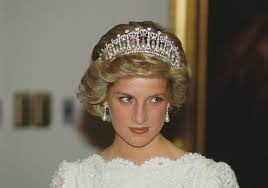

About Princess Diana
Princess Diana, also known as Diana, Princess of Wales, was a well-known and beloved figure who captured the hearts of people around the world. She was born on July 1, 1961, and tragically passed away on August 31, 1997. Diana was a member of the British royal family and the first wife of Prince Charles, the heir apparent to the British throne. Princess Diana was admired for her compassion, empathy, and dedication to charitable causes. She used her position and influence to raise awareness and support for various issues, including HIV/AIDS, landmine clearance, homelessness, and mental health. Diana's hands-on approach and willingness to engage with marginalized individuals and communities helped to destigmatize these issues and brought much-needed attention to them. Her humanitarian work and commitment to making a positive difference in the lives of others earned her widespread admiration. Diana was often seen visiting hospitals, schools, and organizations, comforting the sick, the elderly, and the disadvantaged. Her warm and caring nature resonated with people from all walks of life, and she became known as the "People's Princess." Princess Diana's personal struggles and challenges were also well-documented. Her openness about her own experiences with mental health, eating disorders, and marital difficulties helped to break down societal taboos and shed light on important issues affecting many people. Diana's untimely death left a lasting impact on the world, and her legacy as a compassionate, kind-hearted, and influential figure continues to be celebrated. She remains an iconic and beloved figure, remembered for her humanity, her advocacy for those in need, and her ability to connect with people on a deep and personal level.
Memorable Moments
princess diana
Princess diana with her son
Inspiring Quotes
Anywhere I see suffering, that is where I want to be, doing what I can.
Nothing brings me more happiness than trying to help the most vulnerable people in society. It is a goal and an essential part of my life—a kind of destiny.